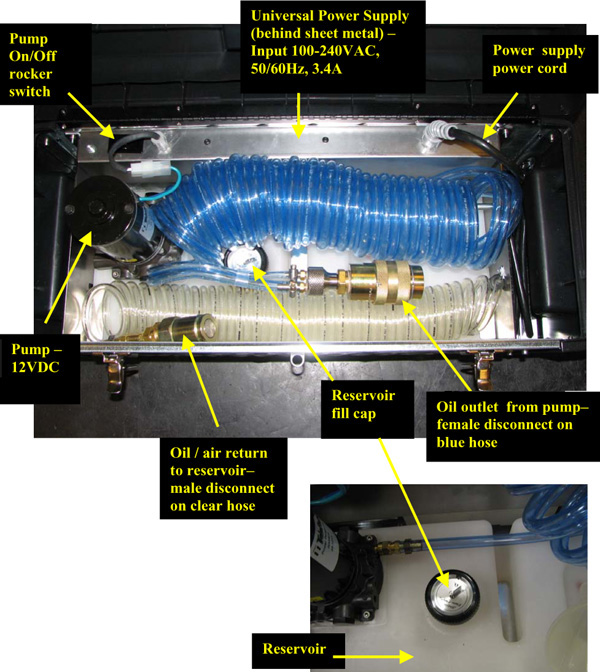
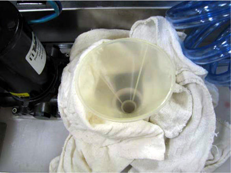
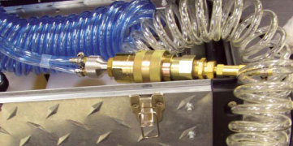
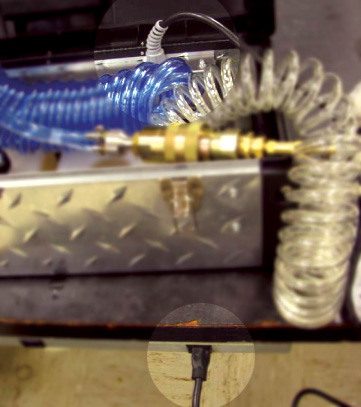
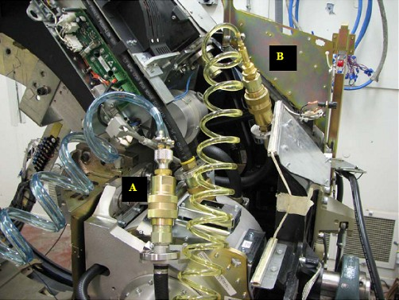
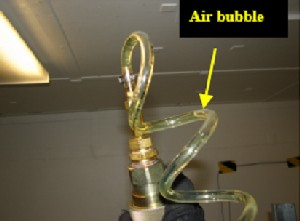
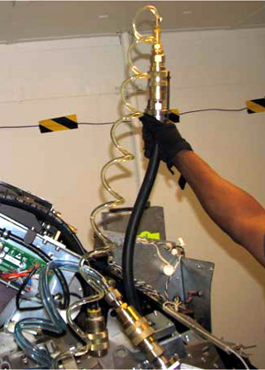
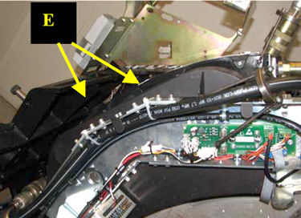
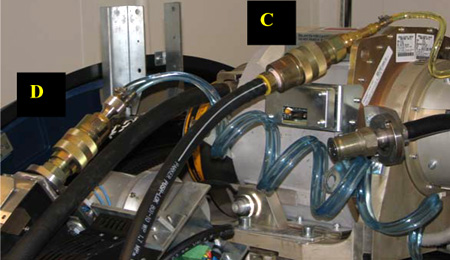

Operating Documentation
Direction 5193574-800, Rev# 22
LightSpeed 7.X Service Methods
Module Version 4.0, Version Date 5/7/10
Operating Documentation |
| Required Persons | Preliminary Reqs | Procedure | Finalization |
|---|---|---|---|
| 1 | Not Applicable | 4.5 - 7.5 | 30 mins |
This document provides the necessary steps to remove air from the Tube Oil Cooling System.
The Tube Oil Cooling System is a closed system with the Heat Exchanger, Tube Oil Pump, and X-Ray Tube as its main components. In the event that air is introduced into the system, unusual Image Artifacts and/or tube over temperature issues can occur.
Illustration 1: Tube Coolant Air Removal Kit

| Last Revised: | November 18, 2009 |
| Item | Qty | Effectivity | Part# | Manufacturer | |
|---|---|---|---|---|---|
| Tube Coolant Air Removal Kit (See Illustration 1) or Oil Tools Kit | 1 | - | 5151778 or 5314706 | - | |
| Oil Compensation Kit or Oil Tools Kit | 1 | - | 5125182 or 5314706 | - | |
| Flow Meter Kit or Oil Tools Kit | 1 | - | 5151781 or 5314706 | - | |
| Torque and Socket Drives with 5mm Hex Bit | 1 | - | - | - | |
| Item | Qty | Effectivity | Part# | Manufacturer |
|---|---|---|---|---|
| Transformer Oil | 2 gallons | - | T0552G, T0552F or 2164148 | - |
| Dry Wipes | - | - | - | |
| Latex Gloves | - | - | - | |
| Ty-Wraps | - | - | - |
| ||||
| Potential for Burns. Severe personal injury can occur via burns from contact with hot oil. Do not service while tube and oil are hot (See required condition, below). | ||||
| ||||
| Potential for personal injury. An energized gantry presents mechanical (rotational) and electrical hazards. | ||||
| ||||
| Potential for personal injury. Gantry oil pump should not be energized during air removal process. | ||||
| ||||
| Personal injury or damage to unsecured hoses during gantry rotation. Be careful of pinch points. | ||||
| Condition | Reference | Effectivity |
|---|---|---|
For Performix Pro VCT 100 X-ray Tube. | - | - |
Recommend procedure completion by GE Service trained personnel. | - | - |
No X-ray exposures have been made for AT LEAST one (1) hour. Tube casing and oil hoses are cool to touch. | - | - |
Remove reservoir cap, position funnel into tank and place dry wipes around funnel to capture any spilled oil (See Illustration 2).
Illustration 2: Funnel and Dry Wipes

Fill reservoir with approximately 1 US gallon of transformer oil (See Illustration 3).
| NOTE: | At a minimum, make sure reservoir is 1/2 full prior to starting air removal procedure. |
| NOTE: | Reservoir’s volume is approximately 5 liters (1.3 gallons). |
Illustration 3: Fill Reservoir with Transformer Oil

| ||||
| Prior to starting air removal procedure, air must be removed from large blue hose. | ||||
Connect together apparatus female and male quick disconnects (See Illustration 4).
Illustration 4: Connect Female and Male Disconnects

Plug in apparatus power supply (See Illustration 5).
| NOTE: | Power supply is set up for 115V operation. However, it is a universal power supply and will work internationally with correct interface adapter. |
Illustration 5: Plug In Power Supply

Turn on apparatus pump power switch.
| NOTE: | Oil will flow through large blue hose into clear hose. Some incidental back flow through small blue hose is expected as well. |
When large blue hose is free of air (~ 30 seconds), turn off apparatus pump power switch and uncouple quick disconnects.
Ensure apparatus reservoir is at least 1/2 full. If filling is required, see steps in Section 4.1.
Move table to home position.
Remove gantry right side cover.
Turn off [HVDC ENABLE], [ AXIAL DRIVE ENABLE] and [120 VAC ENABLE] switches on Service Switch panel.
Remove scan window, gantry left side cover, gantry top covers, and gantry front cover.
| NOTE: | Gantry front-cover control panels and display functionality are required during this procedure. |
Rotate gantry so that tube is between 1 o'clock and 2 o'clock positions.
Remove tube oil pump to tube quick disconnect safety mechanism bolts with a 5mm hex bit socket drive and uncouple quick disconnects (See Item A in Illustration 6.).
Remove tube heat exchanger to tube quick-disconnect safety mechanism bolts with a 5mm hex bit socket drive and uncouple quick disconnects (See Item B in Illustration 6.).
Illustration 6: Quick Disconnect Safety Mechanisms

Unplug J52 pump power connection, disabling gantry oil pump.
Connect apparatus female quick disconnect to tube male quick disconnect (See Item A in Illustration 7).
Connect apparatus male quick disconnect to tube female quick disconnect (See Item B in Illustration 7).
Illustration 7: Apparatus-to-Tube Quick Disconnects

Turn on [120 VAC ENABLE] switch on Service Switch.
Press [ESTOP RESET] on Service Switch panel and wait until scan hardware is reset.
Tilt gantry forward to +30 degrees so that top of gantry is tilted towards table.
Turn on apparatus pump power switch.
| ||||
| Keep apparatus pump running for duration of Steps 8 through 20. Apparatus pump is a high pressure / low flow type so it will take time to remove the air. | ||||
| ||||
| During all air removal steps, raising yellow return line allowing air in system to rise to highest point for easy removal. In general, try to keep it pointed upward as much as possible. | ||||
Slowly rotate tube to 3 o'clock position. Hold for 1-2 minutes, raising return line periodically.
 |  |
Slowly rotate tube clockwise from 3 o'clock position to 6 o'clock position to allow air to rise to back of the tube. Hold for 1-2 minutes, raising return line periodically.
Slowly rotate tube clockwise from 6 o'clock position to 9 o'clock position. Hold for 1-2 minutes, raising return line periodically.
Slowly rotate tube counter-clockwise from 9 o'clock position to 6 o'clock position. Hold for 1-2 minutes, raising return line periodically.
Slowly rotate tube counter-clockwise from 6 o'clock position to 3 o'clock position. Hold for 1-2 minutes, raising return line periodically.
Slowly rotate tube counter-clockwise from 3 o'clock position to 12 o'clock position. Hold for 1-2 minutes, raising return line periodically.
Slowly rotate tube counter-clockwise from 12 o'clock position to 9 o'clock position. Hold for 1-2 minutes, raising return line periodically.
Slowly rotate tube counter-clockwise from 9 o'clock position to 6 o'clock position. Hold for 1-2 minutes, raising return line periodically.
Slowly rotate tube clockwise from 6 o'clock position to 9 o'clock position. Hold for 1-2 minutes, raising return line periodically.
Slowly rotate tube clockwise from 9 o'clock position to 12 o'clock position. Hold for 1-2 minutes, raising return line periodically.
Slowly rotate tube clockwise from 12 o'clock position to 3 o'clock position. Hold for 1-2 minutes, raising return line periodically.
Slowly rotate tube clockwise the tube from 3 o'clock position to 6 o'clock position. Hold for 1-2 minutes and raising the return line periodically.
Repeat steps 10 - 21 a minimum of 2 more times until air is no longer being visibly removed.
Turn off apparatus pump power switch.
Turn off [120 VAC ENABLE] switch on Service Switch.
Uncouple apparatus female quick disconnect to tube male quick disconnect (See Item A in Illustration 7).
Uncouple apparatus male quick disconnect to tube female quick disconnect (See Item B in Illustration 7).
Turn on [120 VAC ENABLE] switch on Service Switch.
Press [ESTOP RESET] on Service Switch panel and wait until scan hardware is reset.
Tilt gantry back to 0 degrees.
Turn off [120 VAC ENABLE] switch on Service Switch.
Cut Ty-wraps holding pump hose in heat exchanger channel (See Item E in Illustration 8).
Illustration 8: Ty-wrap Locations

| ||||
| Be careful not to cut hose. | ||||
Connect apparatus male quick disconnect to tube oil pump female quick disconnect (See Item C in Illustration 9).
Connect apparatus female quick disconnect to heat exchanger male quick disconnect (See Item D in Illustration 9).
Illustration 9: Tube Oil Pump-to-Tube Heat Exchanger Quick Disconnects

Turn on [120 VAC ENABLE] switch on Service Switch.
Press [ESTOP RESET] on Service Switch panel and wait until scan hardware is reset.
Ensure apparatus reservoir is at least 1/2 full. If filling is required, see steps in Section 4.1.
Perform Section 4.4, Steps 7 - 22.
Uncouple apparatus male quick disconnect from tube oil pump female quick disconnect.
Uncouple apparatus female quick disconnect from heat exchanger male quick disconnect.
Remove apparatus from system and connect system components to each other.
Plug J52 pump power connection.
Turn on [120 VAC ENABLE] switch on Service Switch for 30 seconds, then turn off.
| NOTE: | Remaining air is moved to heat exchanger. |
| ||||
| Make sure [120 VAC ENABLE] switch on Service Switch Panel is turned off before unplugging J52 pump power connector. | ||||
Unplug J52 pump power connection.
Uncouple quick disconnects between tube oil pump and tube.
Connect apparatus male quick disconnect to tube oil pump female quick disconnect.
Connect apparatus female quick disconnect to tube male quick disconnect.
Turn on [120 VAC ENABLE] switch on Service Switch.
Press [ESTOP RESET] on Service Switch panel and wait until scan hardware is reset.
Tilt gantry forward to +30 degrees so that top of gantry is tilted towards table.
Perform Section 4.4, Steps 7 - 21.
Tilt gantry backward to -30 degrees so that top of gantry is tilted away from table.
Perform Section 4.4, Steps 7 - 21.
Tilt gantry forward to 0 degrees.
Perform Section 4.4, Steps 7 - 22.
Uncouple apparatus male quick disconnect from tube oil pump female quick disconnect.
Uncouple apparatus female quick disconnect from tube male quick disconnect.
Connect tube oil pump female quick disconnect to tube male quick disconnect.
Plug J52 pump power connection.
Restore tube oil pump to tube quick disconnect safety mechanism and torque M6 bolts with a 5mm hex bit torque drive to the following values.
| 7.3 ft.-lbs | 9.9 N-m | 88 in-lbs | 101 kg-cm |
| NOTE: | If safety mechanism rotates in relation to quick disconnect, tighten slowly until it stops rotating. |
| NOTE: | Do not over-torque M6 bolts. Doing so can cause quick disconnect to leak. |
Restore tube heat exchanger to tube quick disconnect safety mechanism and torque M6 bolts with a 5mm hex bit torque drive to the following values.
| 7.3 ft.-lbs | 9.9 N-m | 88 in-lbs | 101 kg-cm |
| NOTE: | If safety mechanism rotates in relation to quick-disconnect, tighten slowly until it stops rotating. |
| NOTE: | Do not over-torque M6 bolts. Doing so can cause quick disconnect to leak. |
Ty-wrap hoses to tube heat exchanger.
If another Service Procedure required procedure execution, perform the following steps.
Turn on [120 VAC ENABLE], [AXIAL DRIVE ENABLE] and [HVDC ENABLE] switches on Service Switch panel.
Press [ESTOP RESET] on Service Switch panel and wait until scan hardware is reset.
Return to associated Service Procedure.
If procedure execution was not due to another Service Procedure, perform the following steps.
Install gantry front cover, gantry top covers, gantry left side cover, and scan window.
Turn on [120 VAC ENABLE], [AXIAL DRIVE ENABLE] and [HVDC ENABLE] switches on Service Switch panel.
Press [ESTOP RESET] on Service Switch panel and wait until scan hardware is reset.
Install gantry right-side cover.